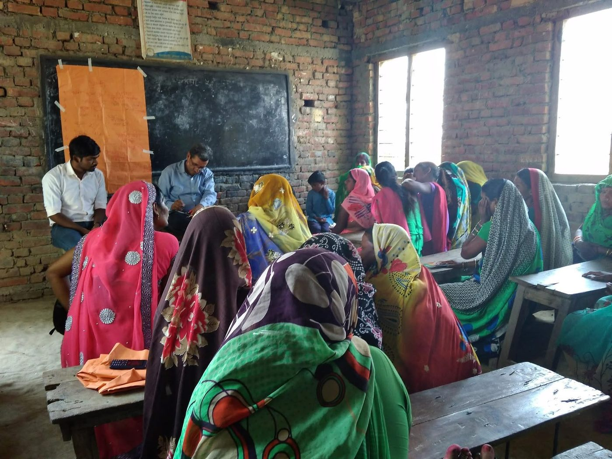
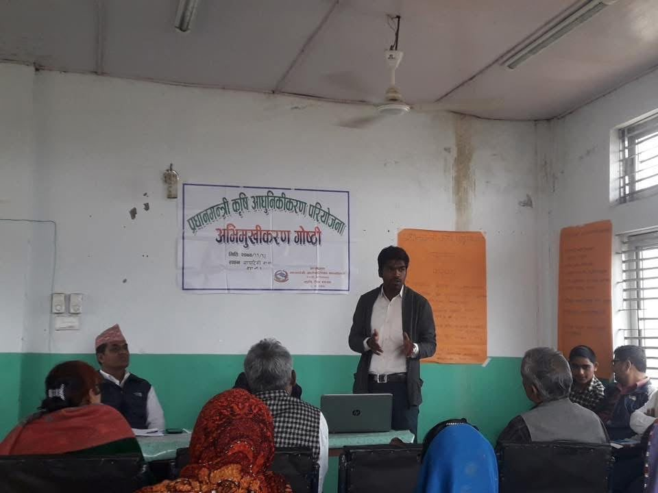
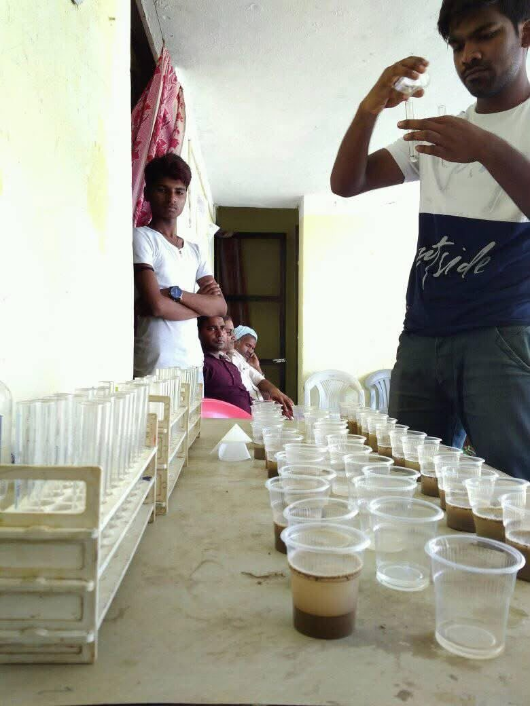
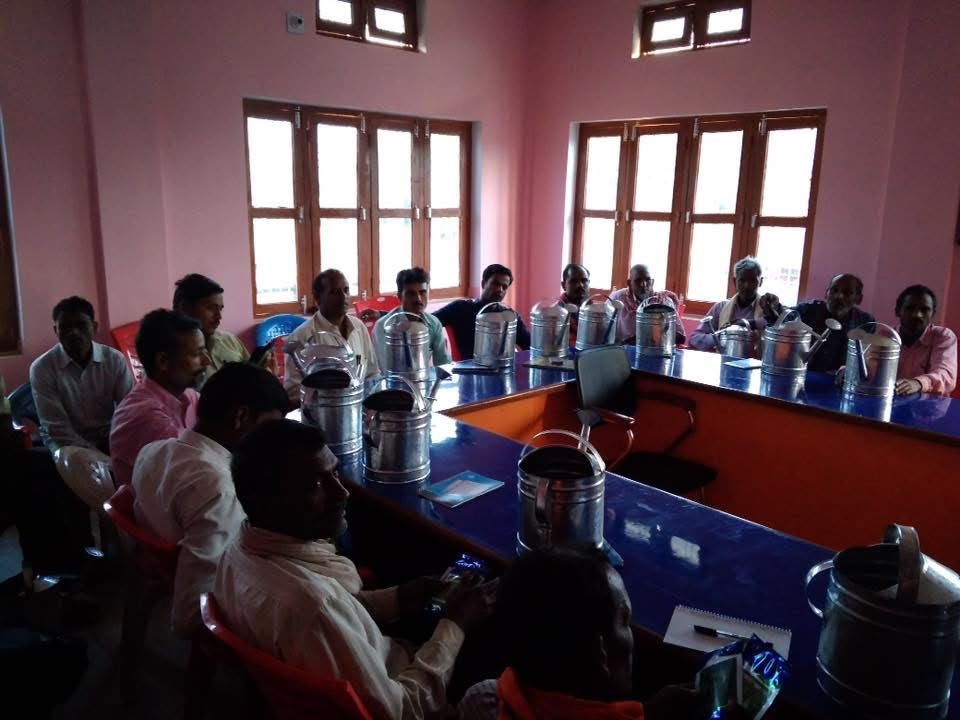

Fieldwork
Fieldwork has been an important part of my research. I have spent six months in a remote village on the border of India and Nepal, conducted a month-long rapid rural appraisal in the Western Terai of Nepal, and worked in the hilly regions of Baglung, Nepal. In Bihar, India, I carried out scoping work across four districts to understand the implementation of MGNREGA, India’s rural employment guarantee program.
Field Reports







